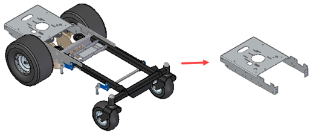
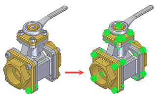
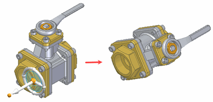
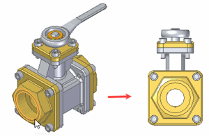

Assembly Preview
Use the Assembly Preview to quickly load large assemblies and preview their contents. While in Assembly Preview, you can visually interact with the assembly to do such things as zoom, rotate, and show and hide the assembly components. Eliminating the loaded components is very helpful when sending assemblies to suppliers to view. Suppliers can view and visually manipulate the assembly, but cannot make changes to it.
While working in Assembly Preview, you can show and hide parts to manage the scope of the assembly components that you want to load when you open the assembly for editing in the assembly environment. Only the displayed components are opened for editing in the assembly environment. This workflow improves performance by decreasing the time needed to open the assembly.
Preparing the assembly for Assembly Preview
To specify the geometry you want to store,use the option Store geometry in Assembly for fast preview on the General page of the Solid Edge Options dialog box. If you select the option, additional geometry display data and structure data needed for assembly preview is added to the assembly file.
If you clear the option, the additional data is not stored in the assembly.
Including the display and structure data when saving the assembly increases the file size. Depending on the complexity of the entire assembly, this increase can be very significant.
Opening large assemblies in Assembly Preview
Assembly Preview is dependent on writing geometry display data and assembly structure data to the top level assembly. When you open the assembly in Assembly Preview, Solid Edge opens the top level assembly using the saved geometry display and structure data. Any part and subassemblies are not opened.
Solid Edge provides options for writing data to assembly files and then reading the data from the assembly files, if the assembly is large.
If the assembly is large, you can open the saved data in Assembly Preview by using the Open Assembly Preview for large assemblies option on the Assembly Open As page of the Solid Edge Options dialog box. When you check this option, only the top-level assembly opens.
When you open an assembly in Assembly Preview, the display of the assembly is similar in Assembly Preview and the assembly environment. Both the model display and PathFinder appear similar, but the reduced number of commands in the command ribbon help indicate that you are in Assembly Preview.
To indicate that you are in Assembly Preview, the Assembly Preview dialog box displays when you open an assembly in Assembly Preview. The dialog box informs you that you have opened the assembly in Assembly Preview.
Use the dialog box to do the following:
|
To: |
Do this: |
|---|---|
|
To open the assembly for edit in the assembly environment |
Click the Edit Assembly button. |
|
To display the Assembly Open As dialog box. Use the options on the dialog box to specify how you want to open the assembly. |
Click the Edit Assembly with Options button. |
|
To disable the automatic display of the dialog box. |
Check the option Disable automatic display of this dialog when an assembly is opened in Assembly Preview. When the option is selected the dialog box will not display the next time you open an assembly in Assembly Preview. You can click the Assembly Preview button to display the dialog box. |
|
Display help. |
Click the button. |
|
Dismiss the dialog box. |
Click the button. |
|
Redisplay the dialog box. |
Click the Assembly Preview button . |
Using Assembly Preview to limit the components to load for assembly edit
When you enter Assembly Preview, PathFinder displays the assembly components. You can select these components in PathFinder and use commands to do such things as change display configuration, change view style, rotate, zoom, show, and hide to control the display of the assembly components that you want to load for edit.

Hiding components in Assembly Preview reduces the scope of components that are loaded when the assembly is edited. This is because only the displayed components are loaded.
You can also use QuickPick and fence selection to specify the components that you want to open for editing.
Opening the assembly for edit from Assembly Preview
After you define the scope of what you want to load, use the Edit Assembly command to open the assembly for edit in the assembly environment. Because only what is displayed is opened for edit, the time needed to open the assembly is reduced. If needed, you can load additional components later.
You can also use the Edit Assembly with Options command to display the Assembly Open As dialog box. Use the options on the dialog box to specify how you want to open the assembly.
When opening a large assembly with the Edit Assembly command or Edit Assembly with Options command, an Assembly Load/Update Progress dialog box displays the load status.
Creating reports in Assembly Preview
Use the Reports command to retrieve and display information about the components in the assembly. The Reports command in Assembly Preview is consistent with the command used in the assembly environment when the assembly is opened with all parts hidden and inactive. However, one difference is the Parts currently selected option is not available in the Among drop-down list. It is not needed since selection in Assembly Preview is based on the additional geometry and PathFinder data written to the top level assembly. You can open the top-level assembly in Assembly Preview without all of the subassembly and component parts. However to run the Reports command, the subassemblies and components parts must be available. This is the same as running the command in the assembly environment. To manage the display of the report, you can use the Format option on the Reports dialog box just as you would in the assembly environment.
Displaying assembly statistics in Assembly Preview
Use the Assembly Statistics command to retrieve PathFinder data saved from the top-level assembly. In other words, you can view general statistical information for the assembly, without the subassemblies and other components. This information includes things such as total parts and unique parts.
The list on the Assembly Statistics dialog box displays general component information, such as file name and type. File specific information such as load state or file size require accessing the component files.
You can edit the assembly with the Edit Assembly command before running the Assembly Statistics command to get more detailed component information.
Using Selection Manager in Assembly Preview
Use the Selection Manager Mode command in Assembly Preview to do things such as selecting a part and then locating all parts that are identical to the selected part.

Orienting the view of the assembly
In Assembly Preview, you can locate geometry from the display data saved in the top-level assembly, meaning you can locate geometry, such as faces, without the component part or sheet metal files.
You can use commands such as the Spin About command to rotate a view about a selected face

and the Look at Face command to define the view orientation using a planar face or reference plane.

Measuring elements in Assembly Preview
In Assembly Preview, you can use the measure commands, such as Measure Angle, Measure Distance, Smart Measure, and Inquire Element, to display geometry data that is saved to the assembly. The measurements in Assembly Preview are approximate. The commands do not measure the actual parts, so the component parts do not have to be available in Assembly Preview for the measure commands to work.